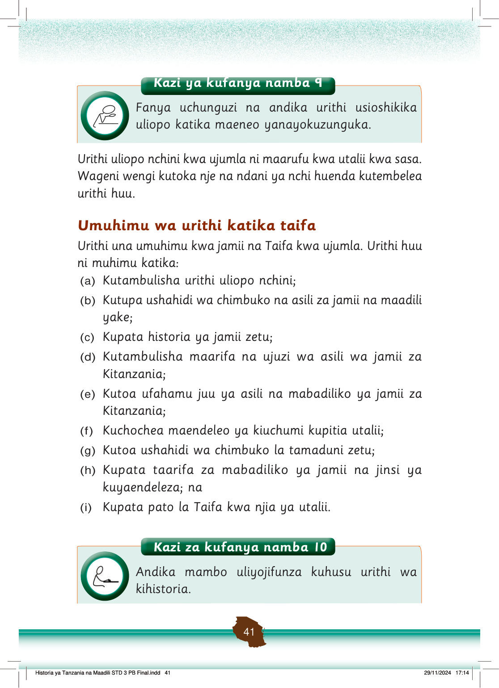

Kazi ya kufanya namba 9
Fanya uchunguzi na andika urithi usioshikika uliopo katika maeneo yanayokuzunguka.
Urithi uliopo nchini kwa ujumla ni maarufu kwa utalii kwa sasa.
Wageni wengi kutoka nje na ndani ya nchi huenda kutembelea urithi huu.
Umuhimu wa urithi katika taifa
Urithi una umuhimu kwa jamii na Taifa kwa ujumla.
Urithi huu ni muhimu katika:
(a)
Kutambulisha urithi uliopo nchini;
(b)
Kutupa ushahidi wa chimbuko na asili za jamii na maadili yake;
(c)
Kupata historia ya jamii zetu;
(d)
Kutambulisha maarifa na ujuzi wa asili wa jamii za Kitanzania;
(e)
Kutoa ufahamu juu ya asili na mabadiliko ya jamii za Kitanzania;
(f)
Kuchochea maendeleo ya kiuchumi kupitia utalii;
(g)
Kutoa ushahidi wa chimbuko la tamaduni zetu;
(h)
Kupata taarifa za mabadiliko ya jamii na jinsi ya kuyaendeleza; na
(i)
Kupata pato la Taifa kwa njia ya utalii.
Kazi za kufanya namba 10
Andika mambo uliyojifunza kuhusu urithi wa kihistoria.